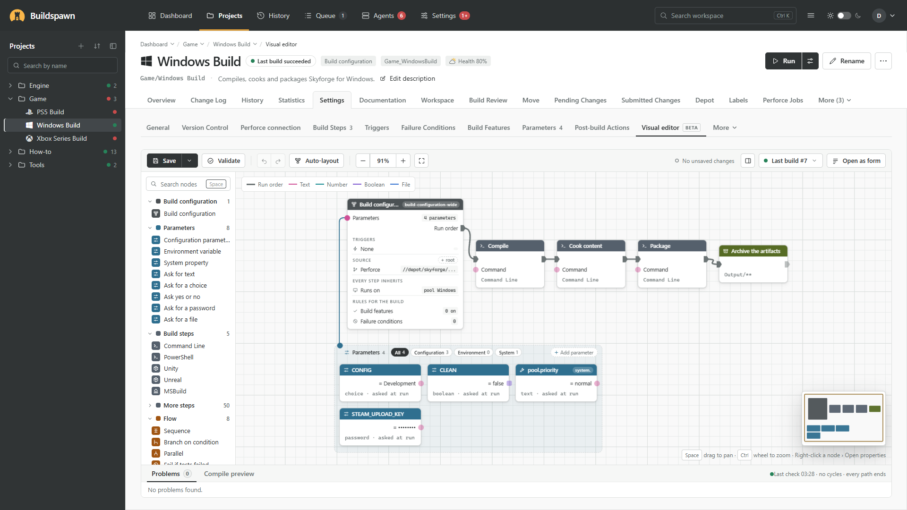

The build configuration block
The block that holds settings for the whole build. Every graph has exactly one, and the steps start from it.

The build configuration block
The block is marked job-wide. Its sections sum up the settings that are not steps:
| Section | What it shows |
|---|---|
| Parameters | How many parameters the build has. The Parameters group is wired here. |
| Triggers | What starts a build, or None. |
| Source | The version control roots, such as a Perforce depot path or a Git repository. + root adds one. |
| Every step inherits | Settings every step gets, such as Runs on pool Windows. |
| Rules for the build | How many build features are on, and how many failure conditions are set. |
The Run order dot on the right of the block starts the chain of steps. Open the block's properties (right-click, Open properties) to change any of these settings. They are the same settings as on the settings homes (Triggers, Version Control, Build Features, Failure Conditions).
Parameter groups
All parameters sit in one Parameters group, wired into the build configuration block. Each parameter is a small block with its name, its value, its type and whether it is asked at run time, for example choice · asked at run.
- The chips at the top of the group filter by kind: All, Configuration, Environment and System, with a count each.
- + Add parameter adds one. You can also drag a parameter type from the palette into the group.
- A
system.property shows a system tag. Password values always show as dots. - Each parameter has a coloured dot on the right. Wire it to a step to show that the step uses it. The parameter's properties list the steps that use it under Used by.
People who may only view the settings never see secret values: they are masked in the visual editor too.
See Parameters for what each kind does.